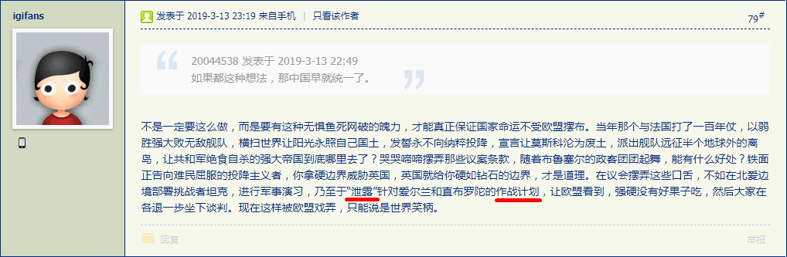

这其中蕴涵着充沛的政治和意识形态内容并引领了激烈的政治和意识形态斗争新动向。
简单说，这个是“故意”被破获的，或者说“泄漏”出倒逼闪米特太君全面深化改革的计划。
类似的操作可以参考国际化大都市「华语第一精日论坛」的精“英”发言：仅剩17天！英国脱欧协议草案以149票之差再被下议院否决

不是一定要这么做，而是要有这种无惧鱼死网破的魄力，才能真正保证国家命运不受欧盟摆布。当年那个与法国打了一百年仗，以弱胜强大败无敌舰队，横扫世界让阳光永照自己国土，发誓永不向纳粹投降，宣言让莫斯科沦为废土，派出舰队远征半个地球外的离岛，让共和军绝食自杀的强大帝国到底哪里去了？哭哭啼啼摆弄那些议案条款，随着布鲁塞尔的政客团团起舞，能有什么好处？铁面正告向难民屈服的投降主义者，你拿硬边界威胁英国，英国就给你硬如钻石的边界，才是道理。在议会摆弄这些口舌，不如在北爱边境部署挑战者坦克，进行军事演习，乃至于“泄露”针对爱尔兰和直布罗陀的作战计划，让欧盟看到，强硬没有好果子吃，然后大家在各退一步坐下谈判。现在这样被欧盟戏弄，只能说是世界笑柄。